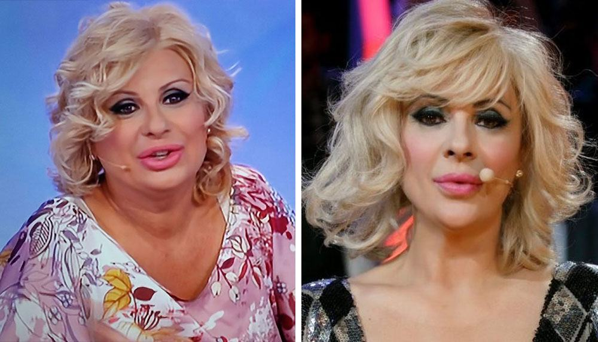
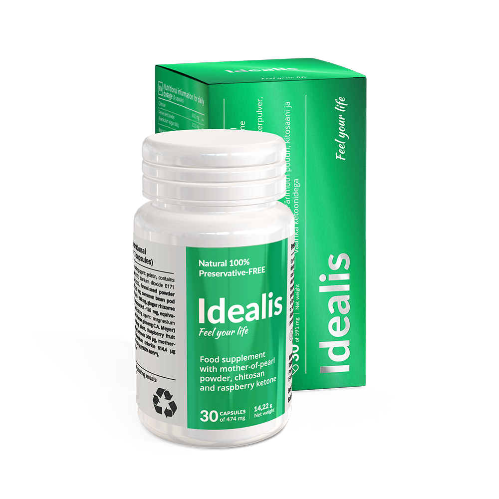
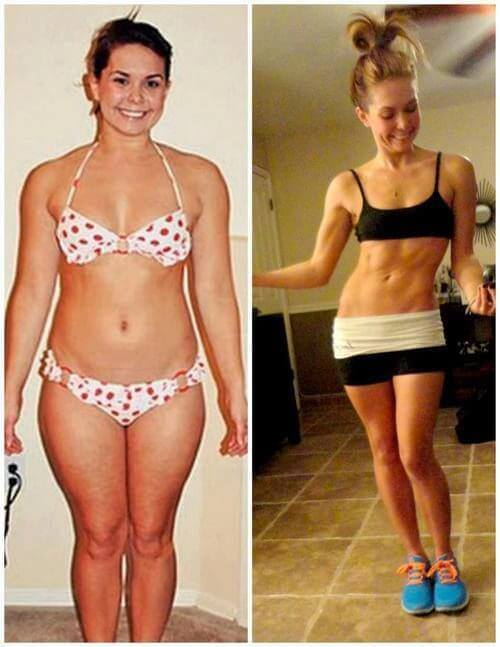
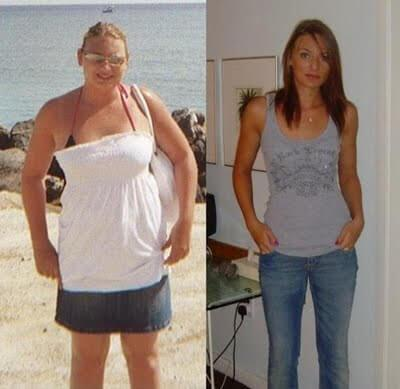
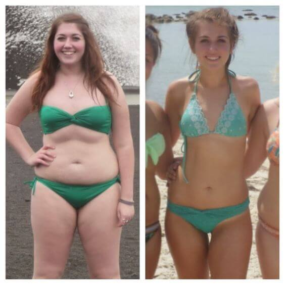
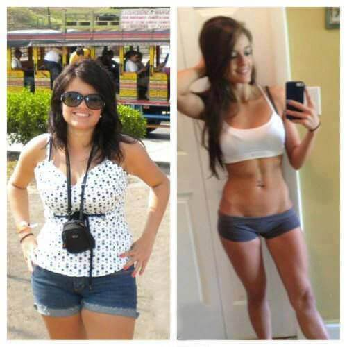
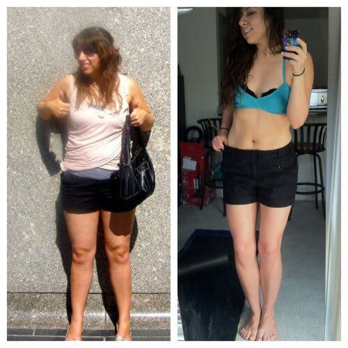

Sono dimagrita da sola e aiuterò anche voi
Ciao! Mi dispiace di non essere stata tanto presente ultimamente, ma non ho avuto il tempo di rispondere a tutte le vostre domande. Però ho notato che ruotano tutte intorno allo stesso problema, come dimagrire una volta per tutte. E, ovviamente, senza danni alla salute! Allora ho deciso di riunirle tutte in questo post e raccontarvi come ho perso quegli odiati 24 kg.
Queste foto sono state scattate ad esattamente un mese di distanza. Impressionante, vero?
Non sono mai stata magra, ma ultimamente il mio corpo è andato fuori controllo ed è diventato un disastro: doppio mento che arrivava fino al seno, fianchi enormi e cellulite ovunque, sulla pancia, sulle gambe e persino sulle braccia. Appena ci ho fatto caso, ho ridotto in brandelli tutte le mie canottiere e maglie senza maniche.
Ho pianto come una fontana prima di riprendermi. E mi sono ripresa, certo, ma ero ancora grassa! Ho cominciato a provare di tutto allo stesso tempo, probabilmente come altre ragazze stupide quanto me. Mi sono messa a dieta e ho cominciato a fare sport. Mi alzavo all'alba, mangiavo uova crude (non fatelo!) e mi trascinavo fuori, tirandomi dietro le mie gambe grasse. Ho rinunciato ai fritti, mi sono iscritta in palestra, ho comprato tisane dimagranti e riempito il frigo di yogurt. Un trattamento completo, per così dire. Pensate che sia servito a qualcosa?
Proprio il contrario! Ho messo su altri 5 kg, non so come, durante le settimane di quei maledetti allenamenti. Pesavo 89 kg! Per un'altezza poco superiore ai 160 cm! Più avanti, i medici mi hanno spiegato che il mio corpo aveva affrontato una situazione di stress , per cui ha iniziato ad accumulare "riserve" in modo intensivo. Il mio corpo pensava che volessi distruggerlo, e l'avrei fatto volentieri! Mi sono dimenticata il sapore del pane, della carne e del gelato. Mangiavo solo mele e bevevo solo acqua, ma inutilmente.
Per farla breve, ho provato diversi metodi dimagranti per qualche mese, ma poi mi sono arresa e ho interrotto questa follia.
Mi vergogno a parlarne, ma un giorno mi sono rassegnata al pensiero di diventare una zitella grassa e di morire circondata da 7 gatti. Allora sono andata da McDonald, ho ordinato metà menù e ho ingurgitato tutto in mezz'ora. Poi ho vomitato in bagno e ho pianto. La situazione non poteva andare peggio.
Poi, il miracolo. No, non nel bagno del McDonald, ma qualche settimana dopo. Su YouTube, ho visto i video di una ragazza americana che raccontava di come era riuscita a liberarsi della maledizione di famiglia, il culone, con l'aiuto di
Idealis
.
L'ho ordinato quando ero solo a metà video. Poi ho cercato delle informazioni su Google e ho scoperto che tutte le stelle di Hollywood lo usano per dimagrire. Dato che avevo provato di tutto e non avevo ottenuto risultati, non credevo nelle trasformazioni miracolose e dubitavo che
Idealis
avrebbe potuto aiutarmi.
Beh, non avrei dovuto!
Il pacco è arrivato in meno di una settimana. Mentre aspettavo, ho letto tonnellate di recensioni e di informazioni su Idealis per essere certa di aver fatto la scelta giusta. Ho seguito le istruzioni, assumendo il prodotto due volte al giorno, alla mattina e alla sera.
Ora prestate molta attenzione. Vi conviene sedervi.
In 4 settimane, ho perso 13 kg!
Milioni di donne in Europa e negli Stati Uniti si liberano del peso in eccesso con Idealis . Secondo le ricerche, il 96,7% di loro ha ottenuto risultati impressionanti: 9 – 14 KG IN SOLI 4 SETTIMANE!
È la combinazione unica degli ingredienti a rendere semplice ed efficace il processo di dimagrimento, e i risultati sono incredibili!
Ho perso
10 cm sui fianchi e la pancia è semplicemente scomparsa, non riuscivo a crederci. La pelle e i capelli sono diventati molto più luminosi e i brufoli sulla schiena sono scomparsi da subito.
Ho cominciato a credere di poter davvero diventare una bella principessa, dopotutto le bilance e gli specchi non mentono!
E comunque non ho seguito diete in quel periodo, sono dimagrita soltanto grazie a
Idealis.
Anche la quinta settimana ha dato i suoi frutti: -6 kg.
E la cosa più sorprendente è stata non dover fare niente. Mi sono limitata a prendere
Idealis come indicato nelle istruzioni e stando attenta a non dimenticarmene. Persino le persone più pigre possono riuscirci.
In un mese e mezzo, avevo perso circa 18 kg senza sforzi, privazioni e allenamenti. La pancia e le braccia, che erano piene di cellulite, sono dimagrite e il doppio mento è scomparso per sempre. Mi viene quasi da piangere per la contentezza mentre scrivo queste cose :)
Dopo aver completato il trattamento completo di 2 mesi, avevo perso complessivamente 24 kg. Nessuno si immagina i miracoli di cui è capace il corpo quando viene aiutato. Non ho più 20 anni, a quell'età si ingrassa e si dimagrisce facilmente.
Migliaia di persone ancora non credono che ora sono diventata così:
Ah, nel 2012 Idealis è stato testato dall'Accademia Nazionale delle Scienze. I risultati sarebbero stati sconvolgenti, ma non sono mai stati divulgati.
Perché? Perché per le compagnie farmaceutiche, per i medici, i dietologi e le cliniche private, un prodotto che FUNZIONA DAVVERO non è conveniente! Il prodotto, tra le altre cose, è anche a buon mercato...
Ora consiglio
Idealis a tutte le mie amiche e colleghe, credo che tutti dovrebbero conoscerlo. È così bello essere magra e piena di energia che voglio che tutti sappiano quanto si può essere felici. Se decidete di ordinarlo, fatelo sul sito ufficiale del prodotto.
Non morite di fame, non ammazzatevi in palestra, siate più furbe! Ora sapete cosa fare.
Sognate ancora di avere un corpo snello? È arrivato il momento di agire! Sbarazzatevi subito del grasso in eccesso!
Ora risponderò ad alcune delle domande più comuni:

Avrò le smagliature dopo un dimagrimento così rapido?
No,
Idealis non lascia smagliature! Il dimagrimento, per quanto significativo, è graduale, in modo che la pelle abbia il tempo di adattarsi e di rimanere tonica.
Cosa succede alla pelle? Si restringe?
No! Torna al suo stato normale.
Idealis attiva la produzione di collagene, che consente alla pelle di restare elastica e tesa. Non rimarrà nessuna smagliatura, ruga o cellulite!
Che dieta dovrei seguire?
Io sono contro le diete, il nostro corpo non è fatto per essere torturato.
È vero che non bisogna mangiare dopo le 6 di sera?
No, è solo un mito. Mangiate quando volete, non ascoltate queste dicerie. Basta consumare delle piccole porzioni ogni paio d'ore e andrà tutto bene.
Sono lieta di darvi una buona notizia! Ho contattato i rappresentanti italiani di Idealis e hanno deciso di fare uno sconto del 50% ai primi 100 visitatori del mio blog che decidono di ordinare il prodotto!
ORDINA Idealis Carla Ranieri
Carla Ranieri
Sogno di perdere il peso in eccesso da quando ero piccola. Ho scoperto Idealis qualche mese fa e mia madre mi ha sostenuta. Ha detto che è sempre bene provare opzioni nuove per poi decidere qual è il migliore per me. E poi Idealis non costa così tanto. Ora stiamo dimagrendo insieme, mia madre perde più chili di me! Ma comunque i risultati sono fantastici.

 Teresa Magnini
Teresa Magnini
Ciao Tina! Ho provato Idealis e posso dirvi che ha salvato il mio matrimonio e la mia famiglia :) Mio marito ha ricominciato a vedermi come una donna e io sono molto più sicura di me. La vita è diventata più semplice, grazie :) 
 Alice Belli
Alice Belli
Cara Tina, il tuo blog è fantastico e i tuoi consigli funzionano davvero. Ho provato un sacco di diete e di programmi di esercizio, ma i risultati non erano mai come speravo. Peso 85 kg e sono alta 163 cm. Ho ordinato Idealis non appena ho letto il tuo post. Spero che mi aiuti a perderne 35. Prometto di raccontarvi dei miei risultati.
Ciao Alice! Non sono l'unica ad essere dimagrita grazie a Idealis , anche un paio di mie amiche ci sono riuscite, perciò ce la farai anche tu. Ricordati di scrivere a proposito dei tuoi risultati, è importante per me conoscere l'opinione degli altri. Spero che tu possa farlo, buona fortuna!
 Anna Carli
Anna Carli
Ho ricevuto il pacco ieri. Sono molto contenta, non vedo l'ora di notare i primi risultati.
Ciao Tina, grazie mille! Sono dimagrita in un batter d'occhio e senza alcuno sforzo! È una manna dal cielo, grazie per averci rese partecipi! 
 Giorgia Sorboni
Giorgia Sorboni
Ho sempre saputo che la tecnologia non ci avrebbe delusi e avrebbe trovato delle soluzioni all'obesità :) Domani ho un appuntamento con un ragazzo dopo molti anni. Fino a poco tempo fa, ero io a somigliare a un ristorante, un sacco di grasso e odore di fritto. Grazie a Idealis ho perso 23 kg in un mese! Grazie Tina! 
Wow, Tina! Risultati così spettacolari in un mese?!??! Penso che ordinerò anch'io il prodotto! Ieri mi sono pesata, non va per niente bene
Ho provato Idealis e ho perso 34,5 kg in 6 settimane!!! Non ci crederei se non mi fosse successo, è fantastico! Tina, ti ringrazio di cuore!
Finalmente ho ordinato Idealis. Grazie Tina! Come promesso, ecco i miei risultati! In un mese ho perso 32 kg! Una vittoria!

Wow, risultati impressionanti. Una mia amica è dimagrita con Idealis e ha perso 19 kg in un mese e mezzo. Persino sua madre non la riconosceva più!
 Marta Brunello
Marta Brunello
Grazie, è bello sapere di avere il sostegno delle persone intorno a te. Corpo nuovo, vita nuova. Io ho solo perso 5 kg per ora, ma continuo a dimagrire in modo stabile. Sono contentissima.
 Sofia Castarelli
Sofia Castarelli
Tre mie amiche sono dimagrite con Idealis, non le riconosceva nessuno perché ora sembrano delle modelle. L'ho ordinato anche per me, non voglio essere la più brutta del gruppo.
 Elena
Elena
Tina, come hai chiesto anch'io scrivo i miei risultati qui. -12 kg in un mese!! Sono felicissima, non potete nemmeno immaginare! 
Ciao Elena, sono contenta per te, ma sono sicura che puoi fare ancora meglio! Buona fortuna, e ricordato che sono sempre pronta a sostenerti!
Ciao Tina! Ho letto la tua storia e ho deciso di ordinare Idealis. Dovevo rivedere delle mie compagne del liceo poco tempo fa e non volevo dare l'impressione di non essermi presa cura di me in questi 20 anni. Sono alta 1,60m e pesavo 91 kg. Non riuscivo nemmeno a trovare dei vestiti della taglia giusta nei negozi, avrei fatto prima ad avvolgermi in delle lenzuola... Ma ora ho una 44 grazie a Idealis ! Quando ci siamo riviste, ero io la regina della festa :) Più di 30 kg in 2 mesi, è così incredibile che mi mancano le parole. Grazie!
Cara Tina, grazie dei consigli! Ho letto molte cose su Idealis , ma non ero sicura. Ho ordinato il prodotto solo dopo aver letto il tuo articolo e ho completato il trattamento 3 settimane fa. Ho perso 39 kg! Ora peso 46 kg e, come promesso, non sono più ingrassata. Ora non mi preoccupo più del mio aspetto e del futuro. GRAZIE! 